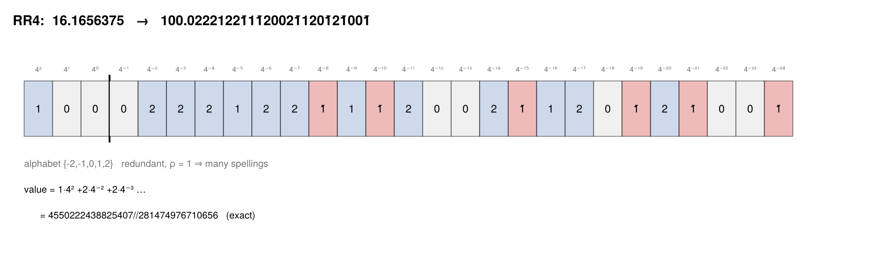
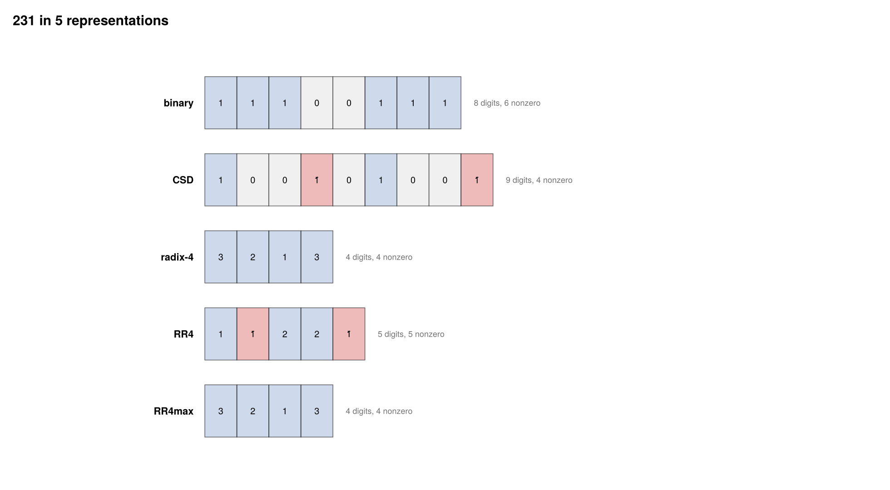
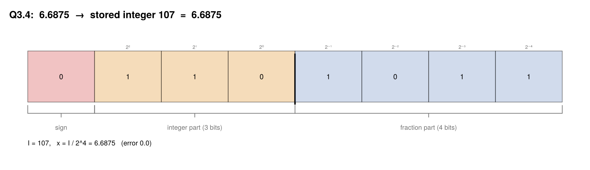
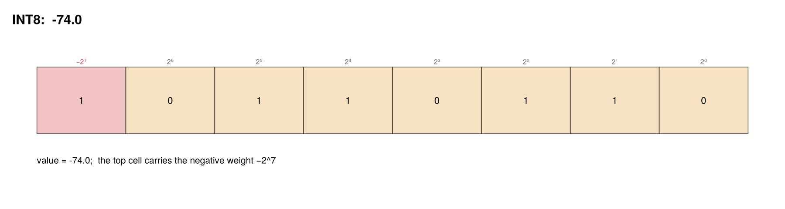

Universal conversion
Every format family in the package converts to every other through one surface. The pipeline is always the same three steps: decode the source to an exact real, round once onto the target's grid, store. Decoding is exact in every scheme, so all the loss lives in the middle step.
xpuFP.realvalue — Function
realvalue(x) -> RealThe exact real number a stored object denotes, whatever its container.
SignedDigits decode exactly (to an Integer or a Rational); floats and fixed-point values are already reals; a QuantizedBlock decodes to its reconstruction vector.
xpuFP.represent — Function
represent(fmt, x; kwargs...)Store x in fmt, returning the format's native container:
| Format | Container |
|---|---|
FloatFormat, FixedFormat, IntFormat | Float64 (the quantized value) |
DigitFormat | SignedDigits |
BlockFormat | QuantizedBlock (vector input) |
julia> represent(FP32, 0.1)
0.10000000149011612
julia> digit_string(represent(RR4, 16.15625))
"101.1̄1̄2"xpuFP.convert_format — Function
convert_format(to, from, x; kwargs...)
convert_format(to, x; kwargs...)Convert a value from one format to another, returning the target's native container.
The two-argument form infers the source from the value itself — use it when x is already a stored object (a SignedDigits, or a Float64 you know is exact). The three-argument form first rounds x onto from's grid, which is what you want when modelling a real pipeline: this value was already living in FP32 before we narrowed it.
Any pair of families is allowed, so this spans float → digit, digit → fixed, block → float and everything between.
julia> convert_format(E2M1, FP32, 2.25)
2.0
julia> digit_string(convert_format(RR4, FP32, 6.5))
"12.2"
julia> convert_format(FP32, RR4, to_digits(RR4, 6.5))
6.5
julia> convert_format(FixedFormat(7, 8), FP32, -3.65)
-3.6484375julia> using xpuFP
julia> convert_format(E2M1, FP32, 2.25)
2.0
julia> digit_string(convert_format(RR4, FP32, 6.5))
"12.2"
julia> convert_format(FP32, RR4, to_digits(RR4, 6.5))
6.5
julia> convert_format(FixedFormat(7, 8), FP32, -3.65)
-3.6484375Auditing a conversion
xpuFP.conversion_report — Function
conversion_report(to, from, x) -> ConversionReportConvert and audit: how far the value moved, and which edge of the target format it met, if any.
julia> r = conversion_report(E2M1, FP32, 2.25);
julia> r.output, round(r.relerror, digits=4), r.exact
(2.0, 0.1111, false)
julia> conversion_report(FP16, FP32, 1.0e30).overflowed
truexpuFP.conversion_matrix — Function
conversion_matrix(formats, x) -> Matrix{Float64}Round-trip x through every ordered pair of formats, returning the relative error of each conversion. A quick way to see which pairs are lossless (digit systems, and any widening) and which are not.
julia> conversion_matrix((FP32, BF16, E2M1, RR4), 2.25)conversion_report answers not just what came out but which edge of the target it met — overflow, underflow to zero, or a landing in the subnormal ramp.
Converting between BINARY, CSD, RADIX4, RR4 and RR4_MAX is a re-spelling, not an approximation: conversion_report(f, BINARY, x).exact is true for every one of them. That is the structural difference from a float or block format, and it is why the redundant systems sit inside arithmetic units while minimal formats own everything at rest.
Layouts across all families
Missing docstring for plot_digit_layout. Check Documenter's build log for details.
xpuFP.plot_layout_comparison — Function
plot_layout_comparison(formats, value; size=(980,220*length(formats))) -> FigureStack one value's layout in several formats, so the representations can be read against each other.
plot_layout_comparison((BINARY, CSD, RADIX4, RR4, RR4_MAX), 231)plot_digit_layout(RR4; value = 16.1656375)
The value is held exactly: 16.1656375 as a Float64 is a dyadic rational, and since $4 = 2^2$ every dyadic rational has a finite radix-4 expansion. The 27 digits are not an approximation — they are what that float actually is.
plot_layout_comparison((BINARY, CSD, RADIX4, RR4, RR4_MAX), 231)
Read the nonzero counts: binary spends 6, CSD 4 (hence 3 adders instead of 5), and the maximally redundant radix-4 alphabet needs no rewriting at all because 3 is already a legal digit.
plot_bit_layout(FixedFormat(3, 4); value = 6.6875)
plot_bit_layout(INT8; value = -74)
The top cell carries the negative weight $-2^{b-1}$, which is what makes two's complement signed with no correction step anywhere — the same fact Booth's recoding theorem exploits.